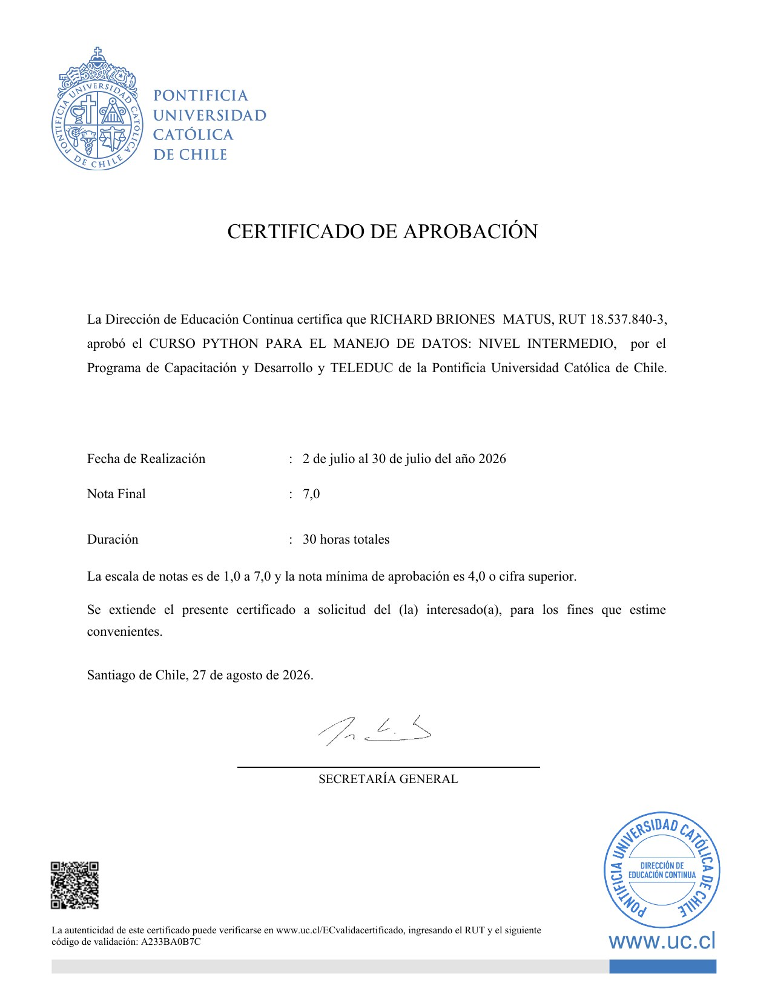
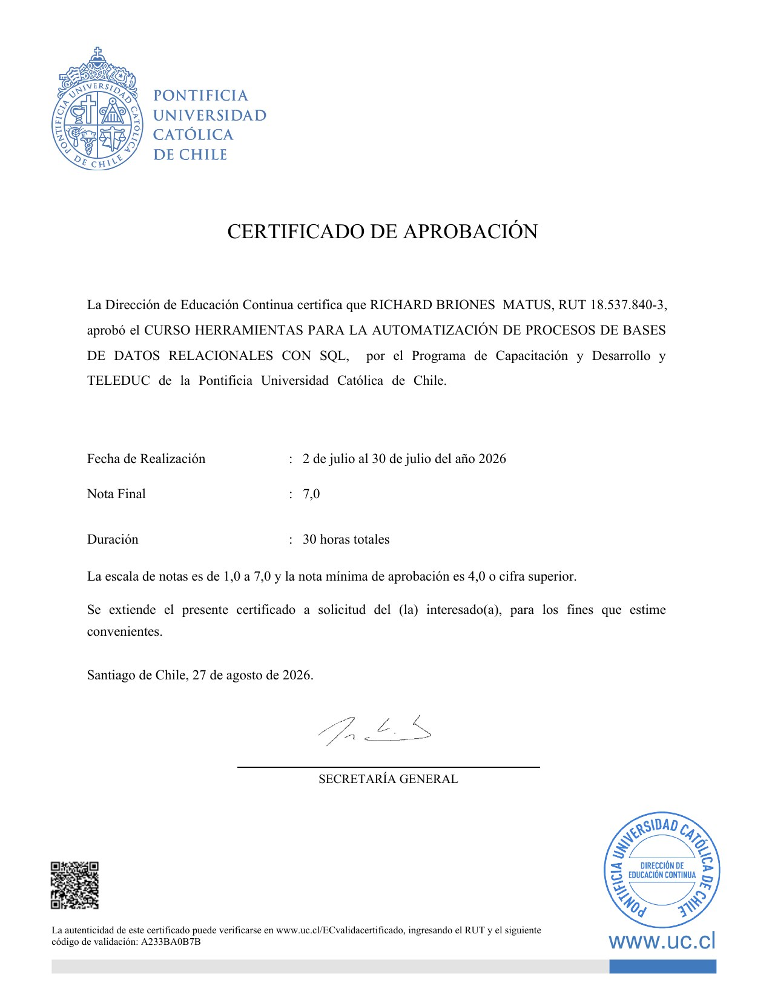

Python para el manejo de datos: nivel intermedio
Pontificia Universidad Católica de Chile — Educación Continua (TELEDUC)
Ver certificado ↗ PDF Validar ↗ A233BA0B7C

// Portafolio de análisis de datos
Analista de datos · Control de gestión & planificación financiera · SQL · Python · Power BI
Vengo de finanzas y trabajo en la frontera con los datos: consolidar fuentes dispersas, construir el modelo, y dejar el resultado en un tablero que el negocio use sin pedir ayuda.
// Perfil
Ingeniero Comercial con mención en Finanzas y un Master of Science in Management. Mi experiencia está en control de gestión y planificación financiera: forecasting de demanda, monitoreo de KPI, consolidación de información desde sistemas que no conversan entre sí.
Lo que me interesa es la parte donde el reporting deja de ser manual. Automatizar la ingesta, modelar los datos una sola vez, y que el resultado sea algo que un gerente pueda abrir el lunes por la mañana sin llamar a nadie. En julio de 2026 cerré dos programas de Educación Continua UC en SQL y Python para formalizar la parte técnica de eso.
// Stack
pandas · numpy · Power BI · Excel · Streamlit
SQL · Python · R
BigQuery · GCP · ETL · Git
// Trayectoria
Apoyo en planificación financiera, trazabilidad de procesos operacionales, forecasting de demanda y monitoreo de KPI, con integración y consolidación de información desde múltiples fuentes de datos.
En la práctica
El ciclo de reporting semanal pasó de seis horas a dos automatizando la ingesta. Las cuatro horas recuperadas se fueron a analizar los números en vez de armarlos.
Diseño e implementación de soluciones de Business Intelligence mediante procesos ETL, automatización de reportes y análisis de datos operacionales, para optimizar la eficiencia de los procesos e identificar oportunidades de control de costos.
En la práctica
Cofundar significó construir la capa de datos desde cero y decidir qué medir antes de que existiera el dato. Esa restricción enseña más sobre modelado que cualquier dataset limpio.
// Registro
Los tres casos usan datos sintéticos de demostración. Están publicados para mostrar método, no resultados de negocio reales.
Preparación de features transaccionales y de comportamiento, entrenamiento de XGBoost y validación contra un período holdout de tres meses. El resultado se expone como un score por cliente que alimenta la campaña de retención.
Consulta de producción:
SELECT
customer_id,
datediff(current_date, last_active_at) AS days_inactive,
round(churn_score, 3) AS churn_score
FROM analytics.customer_features
WHERE churn_score > 0.72
ORDER BY churn_score DESC;## customer_id days_inactive churn_score
## 104882 91 0.968
## 117340 74 0.941
## 109273 68 0.903
## … 1.281 filas másEn la práctica
El 18 % de la base concentra el 74 % de la fuga de ingresos. En vez de una campaña de retención sobre toda la cartera, el equipo comercial ataca un grupo acotado — mismo presupuesto, mucho mejor retorno.
ETL desplegado en GCP/BigQuery que consolida registros transaccionales desde cuatro sistemas y los conecta con un tablero interactivo. La actualización es diaria y no requiere intervención.
En la práctica
Antes, alguien copiaba y pegaba cuatro exportes a Excel cada lunes. Ese trabajo desapareció, y con él la clase de error que nadie detecta hasta el cierre de mes.
Calcula matrices de cohortes y curvas de supervivencia sobre la base de usuarios, servidas desde una app que cualquiera del equipo puede abrir y filtrar.
En la práctica
Producto y Growth dejan de pedirle consultas al equipo de datos para preguntas que se repiten cada mes. La cola de tickets baja y las respuestas llegan el mismo día.
// Credenciales
Pontificia Universidad Católica de Chile — Educación Continua (TELEDUC)
Ver certificado ↗ PDF Validar ↗ A233BA0B7C

Pontificia Universidad Católica de Chile — Educación Continua (TELEDUC)
Ver certificado ↗ PDF Validar ↗ A233BA0B7B

| Programa | Institución | Años |
|---|---|---|
| Master of Science in Management | Kedge Business School, Bordeaux | 2018–2019 |
| Ingeniería Comercial, mención Finanzas | Universidad Andrés Bello, Viña del Mar | 2014–2017 |
| Educación básica y media | The Mackay School, Viña del Mar | 1998–2011 |